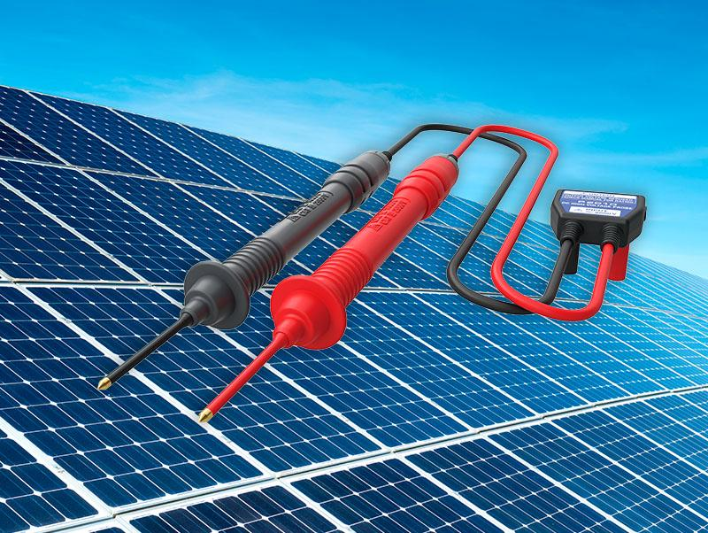
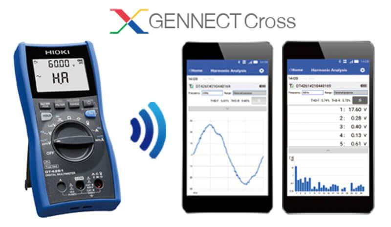
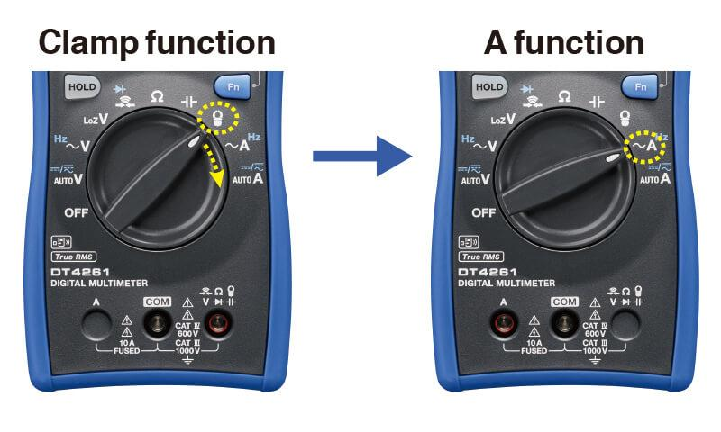

제품 소개
HIOKI DT4261은 산업 현장용 고정밀 디지털 멀티미터로, AC 클램프 프로브 연결 시 최대 1000A까지 전류를 측정할 수 있습니다. 30차까지 고조파 해석(무선 어댑터 Z3210 장착 시)과 USB/무선 통신을 지원해 데이터 관리가 편리합니다.
주요 특징
- DC 전압 0.15%rdg 기본 정확도의 고정밀 측정
- AC 클램프 프로브 연결 시 10A~1000A까지 전류 측정 (7레인지)
- 무선 어댑터 Z3210 장착 시 30차까지 고조파 레벨/함유율 분석
- 오삽입 방지 셔터, 퓨즈 체크, 최대/최소값·순시피크 표시
본 정보는 제조사(HIOKI) 공식 자료를 기준으로 제공됩니다.
고전압화되는 태양광 발전 설비를 안전하게 점검

CAT III 2000V까지 고전압 측정에 대응합니다. 직류 고전압 프로브 P2010을 DT4261과 함께 사용하면 계통을 차단하지 않고 메가솔라 등 태양광 발전 설비를 안전하게 측정할 수 있습니다.
현장에서의 트러블 해석을 지원

무선 어댑터 Z3210(옵션) 장착 시 GENNECT Cross와 연동해 간단하게 고조파 해석이 가능합니다. 파워 컨디셔너 등 PV 시스템의 고조파 측정이나 전원 계통 트러블 해석에 편리합니다.
작업 효율 향상! 디지털 관리로 측정 작업을 간편하게 (Excel® 직접 입력 기능)

Excel® 파일로 작성한 장부에 측정 데이터를 직접 전송 입력할 수 있어 현장에서의 작업 효율이 향상됩니다. (무선 어댑터 Z3210에 의한 Bluetooth® 통신 사용)
전류측정의 오측정을 방지 (퓨즈 체크 기능)

클램프 펑션에서 전류 펑션으로 전환할 때 퓨즈의 단선 체크를 자동으로 수행합니다. 전류 측정 전에 퓨즈 단선 여부를 알 수 있어 오측정을 방지합니다.
테스트 리드의 오삽입을 방지해 안전 안심 (단자 셔터)

회전 스위치에 연동해 사용하지 않는 테스트 리드의 삽입구가 닫히는 단자 셔터가 있어, 전류단자에 테스트 리드를 오삽입한 채 전압을 측정해 퓨즈가 끊어지는 사고를 미연에 방지합니다.
테스트 리드의 캡 분실 걱정 ZERO
테스트 리드와 캡을 일체화했습니다. 리드 보호용 핑거 가드를 슬라이드하면 간단히 측정 카테고리를 전환할 수 있고, 캡을 분실할 염려도 없습니다.
작업이 쉬워지는 다양한 기능과 성능
- 콘크리트 위 1m 낙하에도 견디는 드롭프루프 설계
- -25℃~65℃의 넓은 사용온도 범위
- 직류전압·교류전압을 자동으로 판별하는 AUTOV 기능
- 과입력 시 디스플레이가 적색으로 켜지는 경고 백라이트
- HOLD 시 키가 오렌지색으로 켜지는 HOLD 라이트